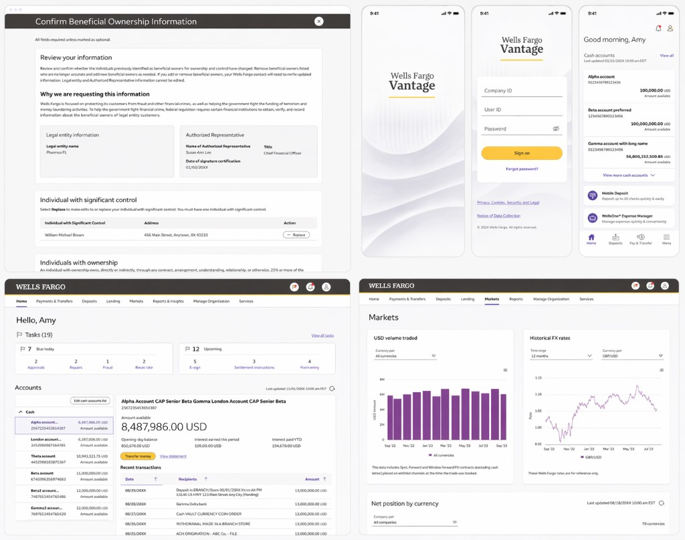

Case study
Wells Fargo Vantage
Unifying 20+ fragmented financial tools into one platform

Overview
Wells Fargo’s Commercial Electronic Office (CEO) was a collection of 20+ siloed applications with inconsistent UX, duplicated workflows, and no shared system.
I led design efforts to consolidate these into Wells Fargo Vantage — a single, unified platform aligned to updated brand guidelines and built for scale.
The Problem
- Fragmented tools with inconsistent patterns and navigation
- High cognitive load and inefficient workflows for clients
- Redundant functionality across applications
- No scalable foundation for product or design consistency
At the same time, we needed to modernize the experience to meet updated brand standards — without disrupting usability.
What I Did
- Defined a unified experience model across all applications
- Consolidated and simplified overlapping tools and workflows
- Led adoption of a scalable design system across the platform
- Directed the visual refresh to align with new brand guidelines
- Aligned product, engineering, and design around a cohesive direction
Outcome
- Reduced 20+ siloed tools into a cohesive platform experience
- Improved usability, consistency, and task efficiency
- Established a scalable foundation for future product development
- Elevated overall product quality and brand alignment